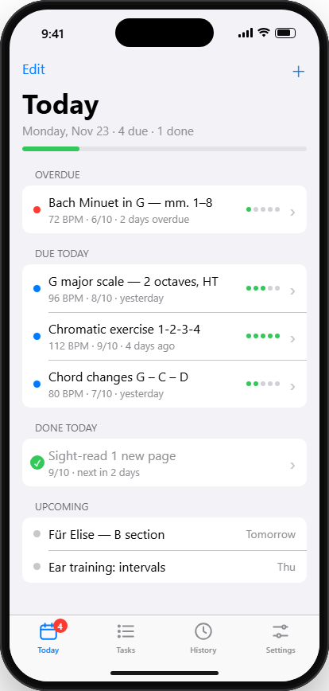
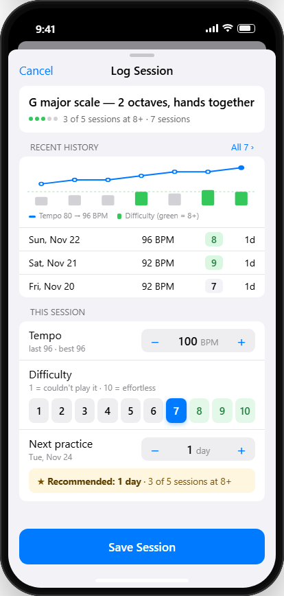
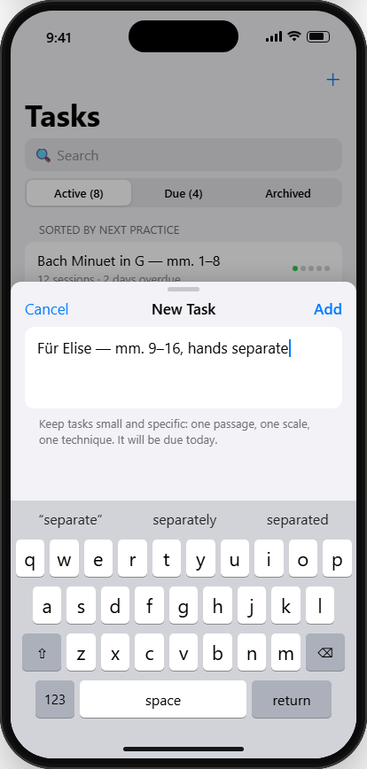

A · Native iOS List



Tab bar (Today · Tasks · History · Settings) with grouped lists and bottom sheets, so it feels like a built-in iPhone app.
- + Familiar and accessible; supports light and dark mode
- + History sits right inside the Log sheet
- − Plain look; the music-specific parts are minimal